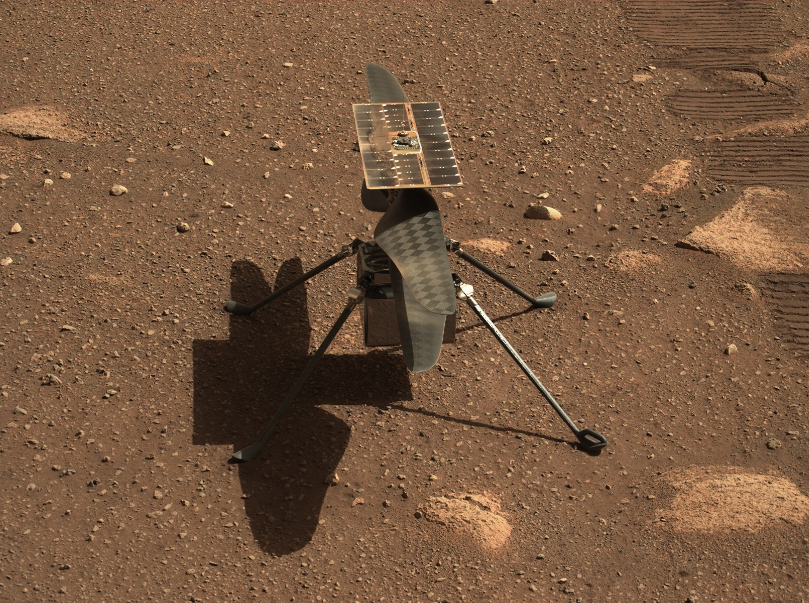

Antigo Lago de Lama Pode Ser O Melhor Lugar Para Buscar Vida Em Marte
Quando se trata de Marte e nossos esforços contínuos para entender a habitabilidade antiga do planeta, as evidências ainda são escassas. No entanto, os cientistas acreditam saber onde essas evidências podem estar escondidas: nos sedimentos.
Pesquisas recentes indicam que um antigo lago de lama pode ser um local promissor para investigação. Onde, então,
Deveríamos buscar evidências de vida em Marte?
Embora a resposta não seja imediatamente óbvia, regiões ricas em sedimentos são um bom ponto de partida. Esta é uma das razões pelas quais o rover Perseverance da NASA está no Cratera Jezero, local de um paleolago antigo, onde os depósitos de sedimentos podem chegar a um quilômetro de profundidade. Mas existem muitas outras regiões ricas em sedimentos. Onde mais os cientistas deveriam expandir suas buscas?
Em um artigo recente, pesquisadores afirmam:
“A busca por vida marciana passada depende da localização de formações superficiais associadas à habitabilidade antiga”.
Uma região que tem despertado interesse é onde grandes canais de escoamento transportaram material das Terras Altas do Sul de Marte para as Terras Baixas do Norte, a leste de Valles Marineris. Grandes quantidades de sedimentos se acumularam nessas terras baixas, sugerindo ser um bom local para exploração. No entanto, um novo estudo sugere que essa pode não ser a melhor abordagem.
O estudo, intitulado “Explorando as evidências de resíduos sedimentares do aqüífero do Amazoniano Médio em um terreno caótico marciano”, foi publicado na Nature Scientific Reports e tem como principal autor Alexis Rodriguez, Pesquisador Sênior do Planetary Science Institute.
JAMES WEBB FAZ DESCOBERTA IMPRESSIONANTE NA ATMOSFERA DE JÚPITER

Descoberto buraco negro mais próximo do Sistema Solar que se conhece